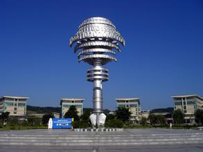

About
SWUST
south west university of science and technology
100
西南科技大学坐落于大禹之乡、李白故里、中国科技城——四川省绵阳市。建校以来，学校几经搬迁，走过了创业、发展、壮大的历程。学校扎根西部，始终坚持“育人为本、德育为先、科学理性、开放包容、彰显卓越”的办学理念和“质量立校、人才强校、特色建校、和谐兴校”的办学思路，形成了“艰苦奋斗，拼搏创新”的西南科技大学精神与“厚德、博学、笃行、创新”之校训。
西南科技大学占地4088亩，校舍建筑面积115万平方米。截至2014年，设有国防科技学院等17个学院（部），拥有国家大学科技园，在工学、农学、理学、经济学、法学、文学、管理学、教育学、艺术学等9大学科门类，设有78个本科专业、17个硕士学位授权一级学科、4个硕士专业学位类别和3个博士学位授权一级学科.
师资力量截至2014年底，学校有教职工2400余人，其中专任西区107广场西区107广场教师1800余人，中国工程院院士1人，副高以上专业技术职务人员800余人.
简介-----------40%
学校规模-------30%
师资力量--------30%
THE success of swust
学术成果科研领域
今年学校国家科研项目实现了三大突破：首次获得国家自然基金重点科技之光科技之光项目，首次获得科技部973项目，主持国家重大科技支撑计划单个课题立项经费首次突破5000万元。获国家级科研项目47项；纵横向科研立项418项，立项经费14102万元，比2010年增长253%。申报和受权专利方面，申报专利122项，受权专利36项，其中受权发明专利27项，比2010年增长540%；重要学术论文方面，在重要核心上发表学术论文421篇，比2010年增长151%；被三大检索收录415篇，比2010年增长161%；获省部科技奖10项；出版学术著作16部，其中学术专著（五大出版社）5部。年学校国家科研项目实现了三大突破：首次获得国家自然基金重点科技之光科技之光项目，首次获得科技部973项目，主持国家重大科技支撑计划单个课题立项经费首次突破5000万元。获国家级科研项目47项；纵横向科研立项418项，立项经费14102万元，比2010年增长253%。申报和受权专利方面，申报专利122项，受权专利36项，其中受权发明专利27项，比2010年增长540%；重要学术论文方面，在重要核心上发表学术论文421篇，比2010年增长151%；被三大检索收录415篇，比2010年增长161%；获省部科技奖10项；出版学术著作16部，其中学术专著（五大出版社）5部。申报和受权专利方面，申报专利122项，受权专利36项，其中受权发明专利27项，比2010年增长540%；重要学术论文方面，在重要核心上发表学术论文421篇，比2010年增长151%；被三大检索收录415篇，比2010年增长161%；获省部科技奖10项.
0
忆校园
我爱西科
i love my campus